Un ajuste en ajustes ▸ app ▸ mode decide qué hay en la app. En recorder queda la cinta de cuatro pistas con su mezclador. En groovebox aparecen además la fila de sitios entera y el motor de sonido.
Cambiar de modo no toca la cinta ni lo que tengas grabado.
| sitio | recorder | groovebox |
|---|---|---|
| tape | sí | sí |
| mix | sí | sí |
| synth | no | sí |
| track | no | sí |
Cinco teclas de transporte: rew · stop · play · rec · loop. Una cinta nace con cuatro pistas y puede crecer hasta seis, con 128 regiones por pista y 10 minutos de cinta.
Grabar encima de algo suma las dos capas (sos). En punch la toma nueva sustituye ese tramo. Si mantienes rec aparece un fader de umbral, de −60 a 0 dB, y la grabación arranca sola cuando la entrada lo cruza.
speed va de 0.25x a 2x, y el tono se va con ella. Si grabas con el fader inclinado, la toma se queda con esa velocidad.
Con un loop activo, rec graba encima sin borrar lo que ya suena. Al parar queda todo en un solo loop.
Tocar una región saca la barra de edición: cortar · unir · levantar · soltar · rev · deshacer. Con una interfaz de varios canales, multi graba varias entradas a la vez, cada canal en la pista que le asignes. bounce funde dos pistas en una.
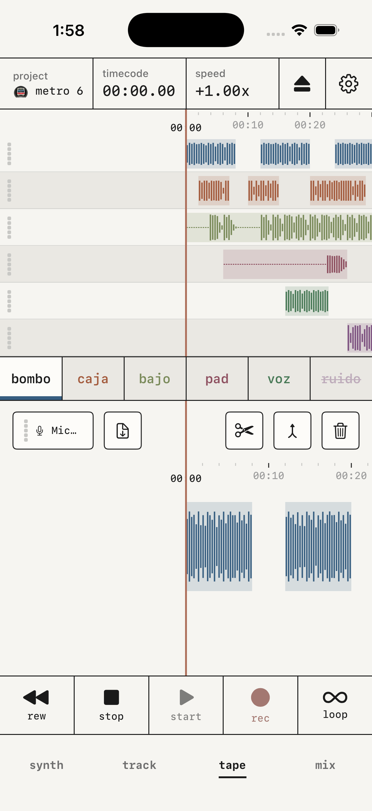
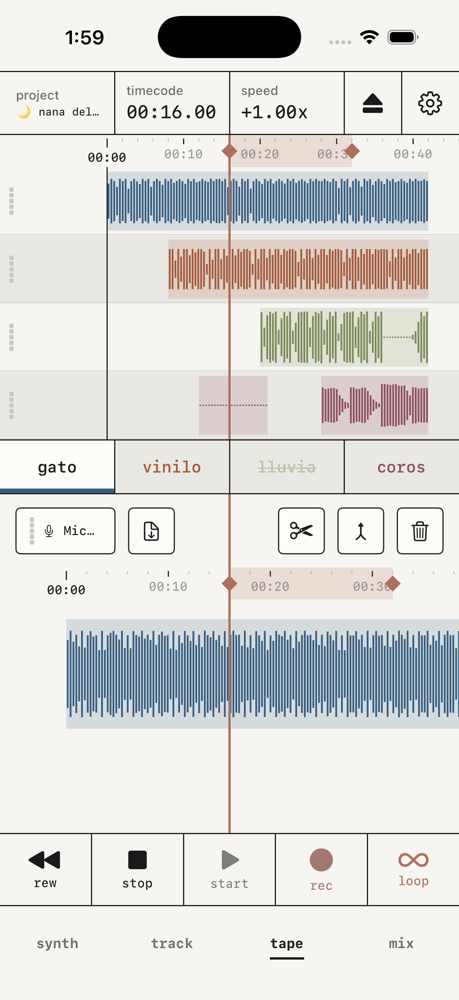
El motor de sonido. La celda de arriba abre los motores y los presets, que viven en el mismo panel. Debajo hay cinco pestañas: synth · adsr · filter · lfo · fx. Cada motor trae sus cuatro macros.
| drift | drift · swarm · bloom · spread | enjambre analógico, estéreo |
| poly | shape · fat · tone · voice | virtual analógico |
| fold | fold · shape · warp · motion | plegado de onda |
| fm | index · ratio · bite · swell | fm de dos operadores |
| pluck | pluck · damp · tone · body | cuerda física, decae sola |
| mallet | strike · ring · tone · shimmer | percusión afinada |
| wave | scan · shape · quant · evolve | wavetable |
| cz | peak · shape · harm · sweep | distorsión de fase |
| ensemble | ensemble · register · air · vibrato | string machine, estéreo |
| noise | grit · peak · color · gust | ruido y textura |
| dx | patch · mod · bright · stretch | fm de seis operadores, banco de 32 patches, importa cartuchos .syx |
| sample | forma de onda · note | sampler de teclado, un archivo, con recorte y loop |
| kit | 24 pads | batería, dos bancos de 12 |
Los once motores de síntesis están construidos sobre Plaits, el código abierto de Émilie Gillet (Mutable Instruments), con licencia MIT. sample y kit tocan muestras.
Cada motor lleva además su propio inserto en la pestaña fx: chorus · drive · phaser · delay · space · dirt · au. Con au entra un efecto auv3 de otra app dentro del sonido.
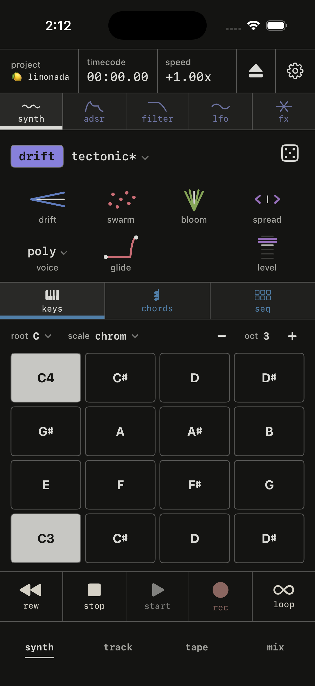
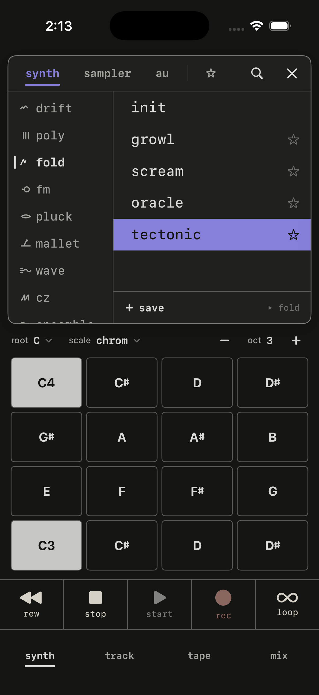
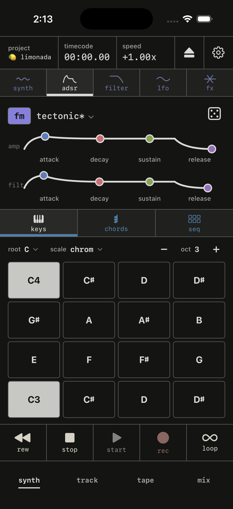
keys toca solo las notas de la escala activa, entre 14 escalas de fábrica y las que te montes tú. La fuerza de cada nota sale de cuánto dedo apoyas y del golpe que detecta el teléfono. Con Apple Pencil, de la presión.
chords pone en ocho pads un acorde por grado de la escala. Mantener un modificador (7 · 9 · 11 · 13 · sus · min · v/) cambia el acorde del pad que toques. En custom son 16 pads y el acorde lo pones tú desde el teclado.
seq tiene tres modos. arp arpegia lo que mantengas pulsado, sobre un anillo de 16 pasos. step es un secuenciador de 16 pasos. ping es una mesa de billar: las bolas rebotan entre campanas y cada rebote dispara una nota.
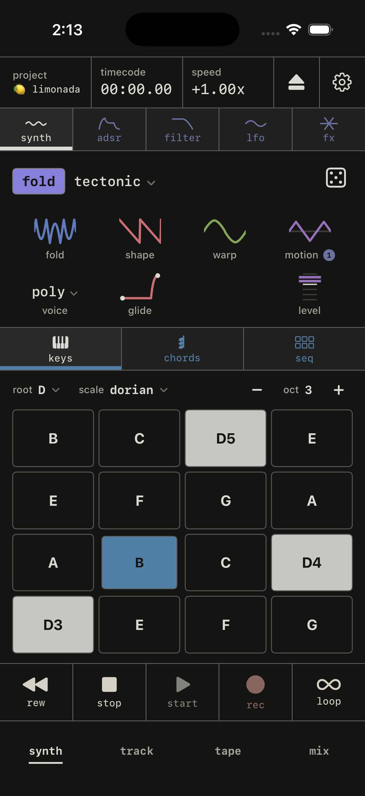
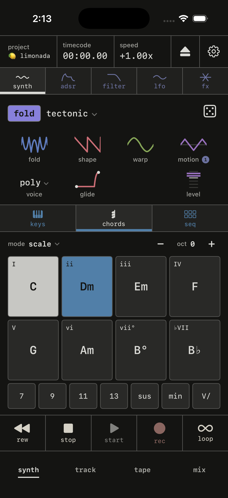
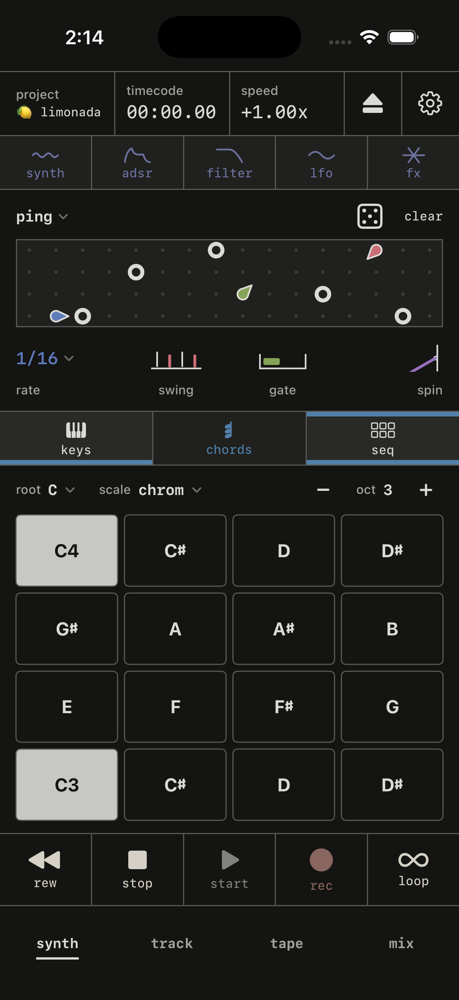
Una rejilla de 24 pads en dos bancos. Un pad vacío abre el importador, con cuatro orígenes: tu biblioteca, un archivo o un vídeo del sistema, el micro, o una pista de la cinta. chop trocea una muestra por los puntos que marques y reparte los trozos en los pads libres.
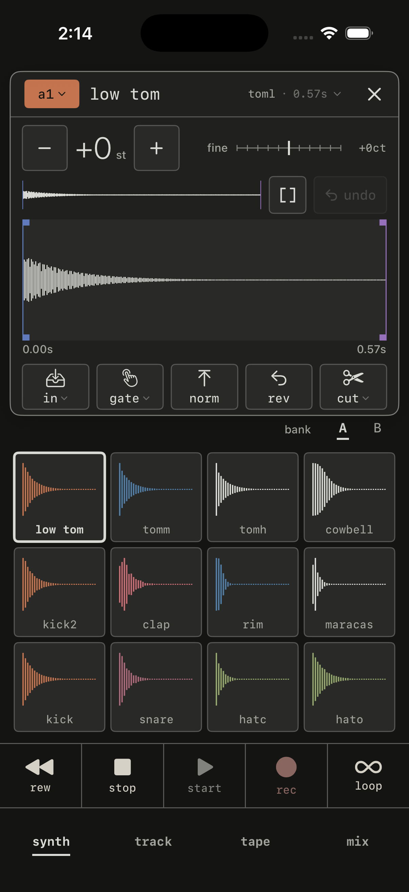
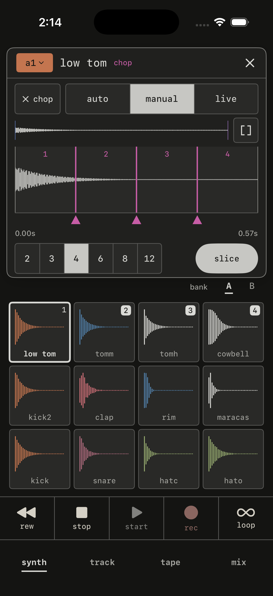
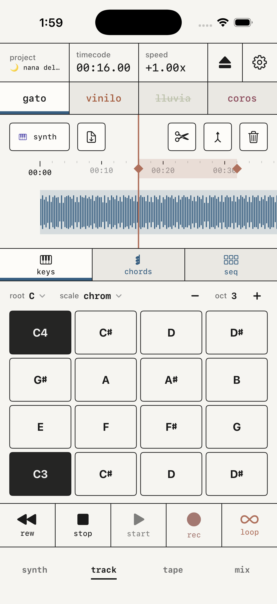
track pone la fila de pistas de tape arriba, el teclado de synth abajo, y la toma de la pista armada en grande entre los dos. Tocas el motor y grabas esa pista sin cambiar de pantalla.
rec source, en el panel de monitor, decide si rec graba el synth o la entrada física. En tape y mix siempre se graba la entrada.
Una tira por pista, de cuatro a seis, todas a la vista: in · pan · sd1 · sd2, el fader con su medidor y m para mutear. No hay solo ni eq por pista. Encima de las tiras, drive empuja la mezcla entera contra el limitador.
Dos buses de efectos, fx1 y fx2. Cada uno carga uno de estos siete o un auv3 de otra app. crush, haze y wobble sustituyen: al subir el envío, esa pista baja su seco. Los demás se suman encima.
| tapesat | drive · tone · bias · age | saturación de cinta. age va de cinta nueva a casete viejo: primero apaga agudos y sube el hiss, pasado un tercio entra el wow. |
| delay | time · fbk · tone · wow | eco de cinta, de 30 a 750 ms. al mover time el eco se desliza en vez de saltar. |
| reverb | decay · tone · drip · damp | ocho líneas realimentadas. drip es el brillo de muelle. |
| crush | rate · bits · grit · tone | baja el muestreo hasta 1.5 kHz y los bits hasta 3, sin filtro antialias. |
| haze | freq · move · res · shape | un filtro que mueve la propia señal o un lfo, libre o atado al tempo. |
| wobble | depth · rate · shape · drop | bamboleo de tono y caídas de cinta. |
| shimmer | shmr · size · tone · bloom | reverb con una octava que vuelve a entrar. el intervalo va de −12 a +12. |
El eq maestro es una curva a pantalla completa que se arrastra con el dedo. cuatro bandas fijas, de −8 a +8 dB cada una: low 150 Hz · body 400 Hz · pres 2.5 kHz · air 8 kHz.
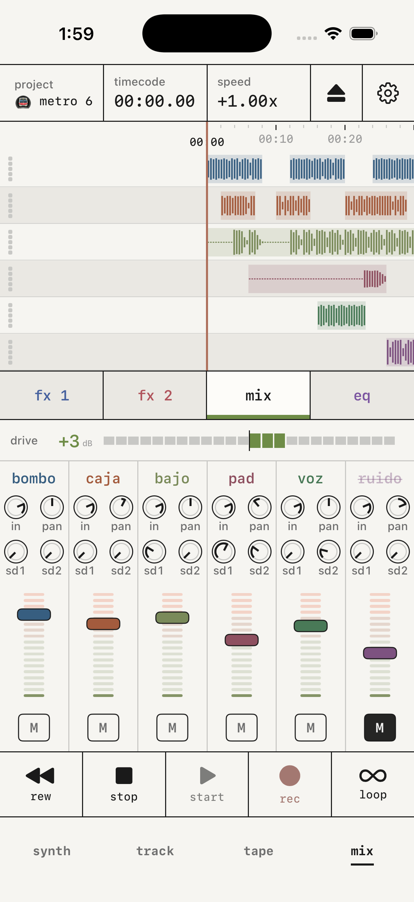
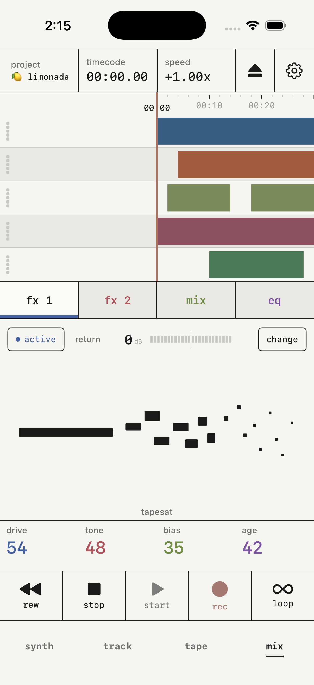
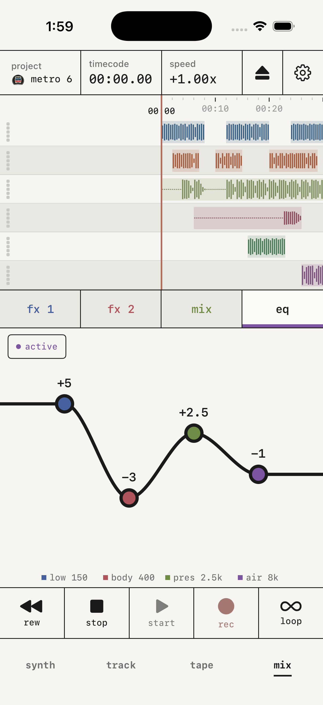
Cada proyecto es una cinta. La lista se abre desde la celda project de la cabecera, y cada cinta se duplica, se renombra o se borra desde su fila. Cada una guarda sus pistas, tempo, compás, loop, efectos y máster.
eject abre tres filas de dos opciones: master o stems · wav o m4a · tape o loop. El archivo sale por la hoja de compartir de iOS. El render pasa por el mismo motor que la reproducción.
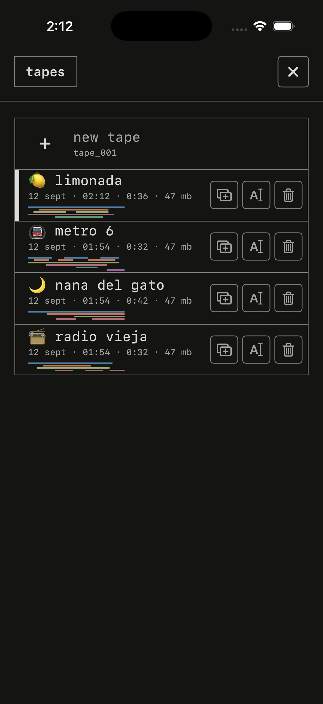
midi clock de entrada o de salida, o Ableton Link con otras apps de la misma red. Encender uno apaga el otro.
Un teclado midi toca el synth nada más conectarlo, por usb, Bluetooth o red. Lleva sustain, pitch bend y rueda de modulación. Todavía no hay MPE.
midi learn asigna un mando físico a un control de la app: transporte, fader, pan, envíos y mute de cada pista, macros del synth y de los efectos, bandas del eq.
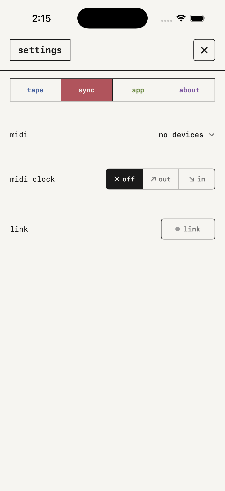
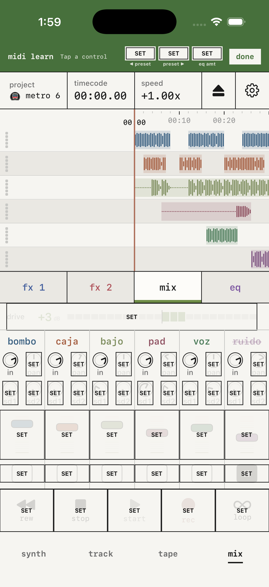
TapeDesk también se abre como auv3 dentro de otra app, en dos piezas.
TapeDesk: Tape es la cinta y el mezclador. Con clock en host, el play del host dispara la grabación; en tape lleva su propio transporte. Las cintas son las mismas que en la app, no una copia. El host puede automatizar el mezclador entero.
TapeDesk: Play es el motor de sonido como instrumento. Recibe notas, sustain y pitch bend del host, y expone 21 parámetros para automatizar. Su sonido se guarda con la sesión del host.
El transporte aparece en la pantalla de bloqueo y en el Centro de Control. El audio sigue con la app en segundo plano. Si la app se cierra a media toma, al volver te ofrece recuperar esa grabación.
Pide tres permisos: micrófono, red local para Link y Bluetooth para un controlador midi. No recoge datos. Tema claro, oscuro o automático, y cuatro acabados de icono: cream · dark · olive · wine.
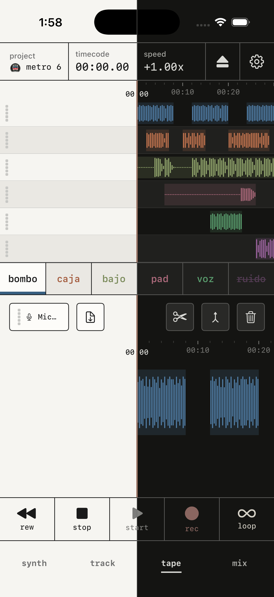
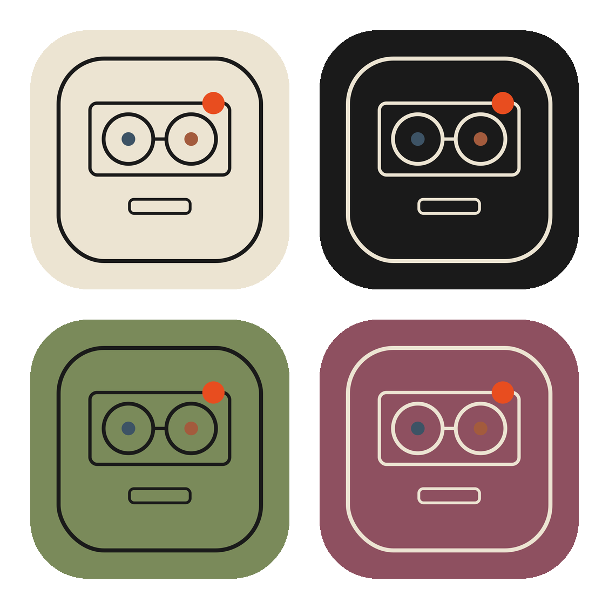